Pátý den naší dovolené jsme se rozhodli strávit procházkou po profláknuté turistické trase Vítězný oblouk - Champs Elysée - Tuilerijské zahrady - Louvre. Ještě předtím nás ale čekal další pravý francouzský zážitek. Ráno jsme se cestou na metro zastavili v jedné z těch úžasných malých pekárniček, kde obsluhovala sympatická paní s červenou rtěnkou, a koupili jsme si tam k snídani 2 obrovské hrozinkové šneky. Péťa vytasil svou francouzštinu a za chvíli už jsme seděli venku na lavičce a baštili. Takovou dobrotou bych chtěla začínat každé ráno :-)! Rozhodli jsme se, že odteď tedy už žádná snídaně ze supermarketu, ale jedině čerstvé pečivo z pekárny téhle stylové Francouzky.
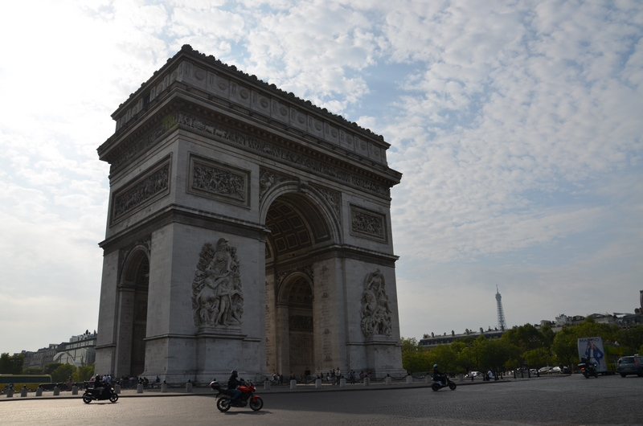
Arc de Triomphe
Metrem jsme se nechali zavést až k Vítěznému oblouku. Ten stojí přímo uprostřed obrovského kruhového objezdu a okamžitě bylo jasné, že jinudy, než podchodem, se k němu není šance dostat :-). Zde by se opět hodila malá odbočka, tentokrát na téma “doprava v Paříži”. Vůbec tím prvním, co mě na Paříži zaujalo a praštilo od očí už z okna autobusu při příjezdu, bylo zjištění, že tady nejezdí téměř žádná barevná auta. Drtivá většina je buď černá nebo bílá, případně stříbrná, ale jinak skoro žádné barvy - to jen tak pro zajímavost. Doprava sama o sobě je strašně stresující a chaotická. Jak chodci, tak i řidiči často ignorují barvy na semaforu. Přecházení silnice je tak poměrně adrenalinovou záležitostí. Do toho všeho se ještě pletou řidiči skútrů, kteří všelijak kličkují mezi auty a občas si při tom dokonce i stíhají psát SMSku (viděno na vlastní oči :D). No a cyklisté, tak to je kapitola sama pro sebe. Na kole tu jezdí spousta lidí, ale s přilbou tady moc často cyklistu neuvidíte. Přitom všichni jezdí strašně rychle a je potřeba dávat si na ně pozor stejně dobře, jako na auta. Na druhou stranu je pravda, že v Paříži najdete hodně cyklostezek - jízda mimo ně se ale podle mě jedná sebevraždě.
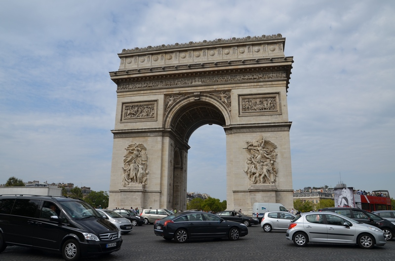
Šílená pařížská doprava
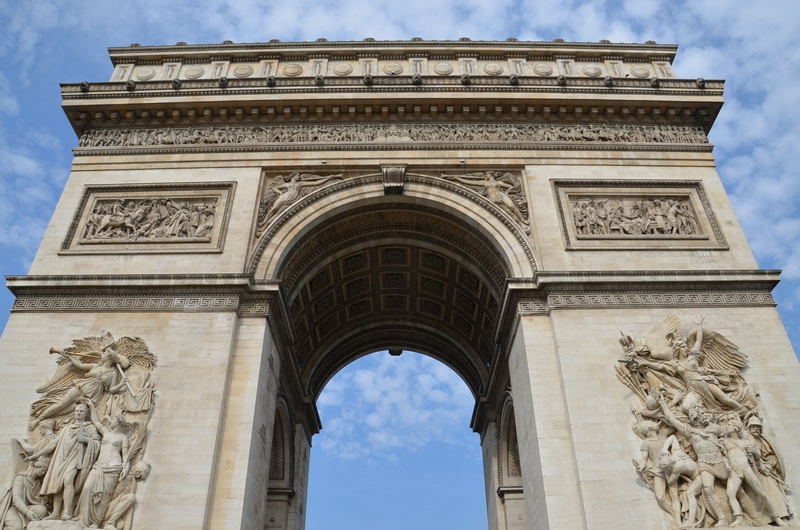
Pod Vítězným obloukem
A teď už zpět k Vítěznému oblouku. Vystáli jsme si tedy frontu na vstupenky a vydali se po točitém schodišti nahoru. Na Paříži se mi líbilo, že spousta památek je tu bezbariérových. To je i případ Vítězného oblouku, který má v jedné ze svých nohou zabudovaný výtah. My jsme si to každopádně vyfuněli hezky po svých :-).
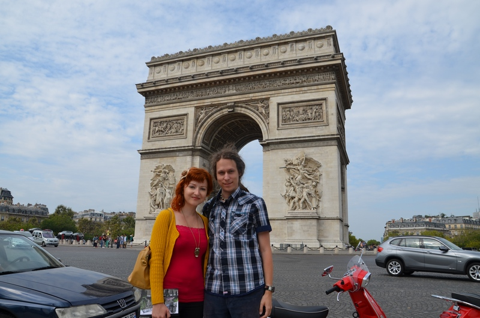
Vzhůru na Champs Elysée
Z Vítězného oblouku se nabízí skvělý výhled především na moderní čtvrť La Défense s dominantní Grande Arche a na proslulý široký bulvár Champs Elysée na protější straně. Musím říct, že ten mě až tak neuchvátil - je to prostě normální nákupní třída plná luxusních obchodů, kaváren a restaurací, na kterou narazíte v každém větším městě. Co mě na Champs Elysée ovšem zaujalo byl fakt, že na ní nenajdete jediný odpadkový koš. Věřte mi, že je to pruda, zvlášť pokud byste do něj rádi něco vyhodili :D.
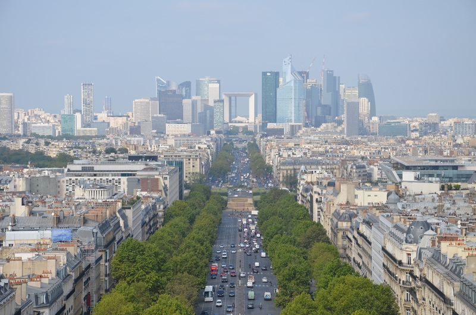
La Défense
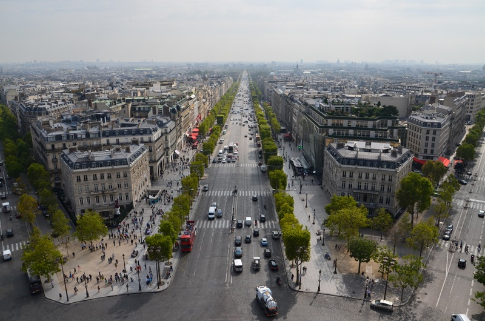
Champs Elysée
Než celou tu dlouhatánskou ulici projdete, docela vám vytráví, a tak jsme se i my začali pomalu rozhlížet po nějakém místě, kde bychom se mohli naobědvat. Chtěli jsme vyzkoušet jednu restauraci blízko Tuilerijských zahrad, která byla na internetu doporučována jako výborná a cenově příznivá. Když jsme k ní však přišli, usoudili jsme podle cen v lístku, že pro nás zas tak cenově příznivá není :D. Toulali jsme se tedy touto luxusní čtvrtí dál a nevypadalo to moc nadějně, ale najednou se před námi vyloupnul jakýsi fast food s italským jídlem, a tak jsme vešli dovnitř a za poměrně slušnou cenu si dali formuli sestávající z hlavního jídla, pití a dezertu. Přílohu k těstovinám jsme si mohli sami navolit podle chuti a jako dezert jsme si vybrali jogurt a tiramisu. Těstoviny byly takové obyč, ale dezerty opět vynikající, takže jsme se stejně přejedli k prasknutí :-). Trávit jsme se vydali do nedalekých Tuilerijských zahrad, kde jsme se svalili do lehátek okolo fontány a slunili se. Zahrady jsou krásným a fotogenickým místem, takže jsme dlouhou chvíli využili také k pořízení několika “aktů” :D…
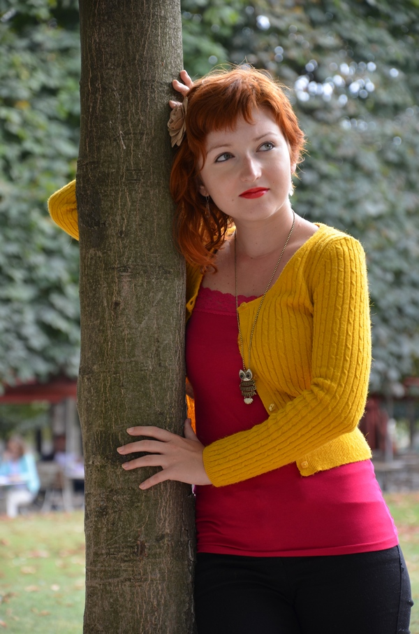
V Tuilerijských zahradách
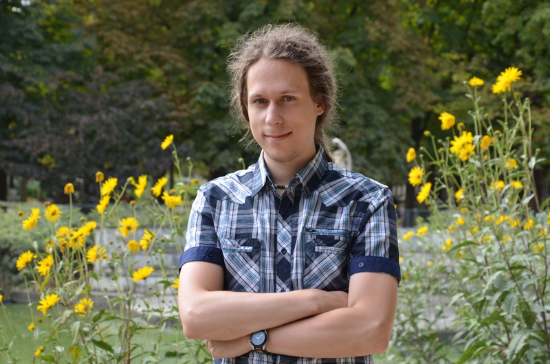
Péťa - model :)
Den jsme se rozhodli završit v proslulém muzeu ze všech muzejí nejmuzeovatějším - v Louvru :D! Fronta tu nebyla skoro žádná, takže jsme se dostali bez problémů dovnitř, nafasovali mapku, protože bez ní jste v Louvru naprosto ztracení, a vydali se za poznáním.
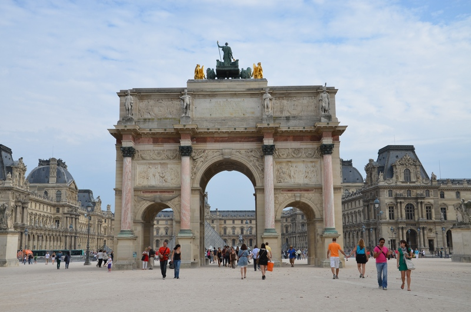
Pyramida na dohled
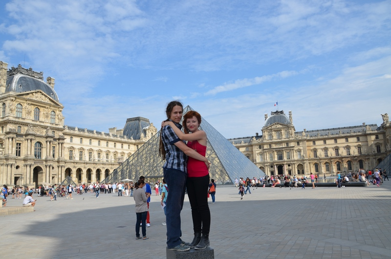
Před muzeem
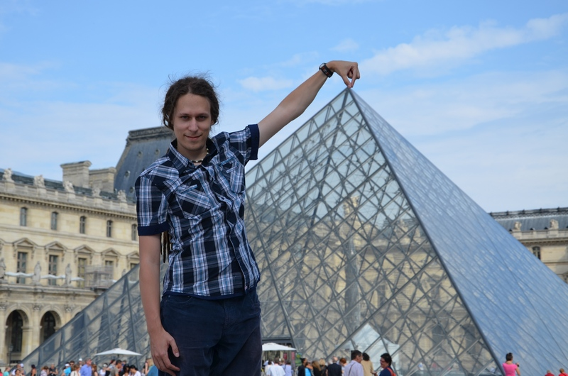
Louvre
Překvapilo nás, že tady nebylo potřeba nechat si vytisknout vstupenky - prostě jsme vždy na vstupu do jednoho ze tří křídel muzea ukazovali občanku nebo pas - a ani tak nám to moc nekontrolovali. Naše první kroky pochopitelně vedly do křídla Denon, kam se valily největší davy turistů - Monu Lisu chce vidět prostě každý. I nám se líbila, přestože je tak maličká :-).
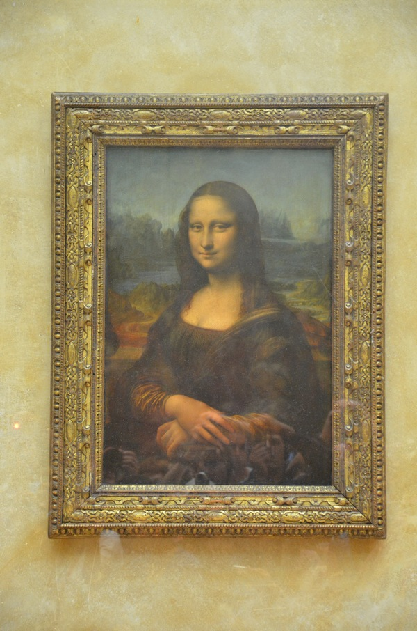
To je ona - Mona!
První patro křídla Denon tvoří především italské kresby. Stihli jsme si projít jejich převážnou část, ale k našemu zděšení nás záhy začali sekuriťáci vyhánět pryč. Vůbec jsme tomu nerozuměli - měli jsme za to, že muzeum se zavírá až o půl 8 a bylo sotva půl šesté :-O! Rozhořčeně jsme se běželi zeptat na informace, co to má jako znamenat, a teprve tam nám bylo vysvětleno, že je rozdíl mezi “museum hours” a “museum collection hours”. Ten první údaj vyjadřuje otevírací dobu pyramidy, druhý otevírací dobu expozice. Může se vám tedy stát, že se bez problémů dostanete dolů do pyramidy, ale do muzea jako takového vás už nepustí. Je to strašná zrada a nepíšou to v žádném průvodci, tak pozor na to! Tento fakt nám poněkud zamíchal plány - chtěli jsme toho ještě tolik vidět, od překrásných antických soch až po Napoleonovy komnaty! Bylo tedy jasné, že se sem do Louvru budeme muset vypravit ještě jednou a to ideálně ve středu, kdy má muzeum otevřeno až do 10ti večer.
Vyvstal tedy problém, co si počít teď. Bylo ještě příliš brzo na to, abychom jeli na hotel, jenže plán jsme žádný neměli. Nakonec jsem objevila v průvodci nějaké informace o nedalekém centru Les Halles, a tak jsme se tam rozhodli vypravit. Čekali jsme, že objevíme nějakou úžasnou stylovou tržnici. Ta tu prý před lety skutečně stála, ale dnes na tomto jinak nepříliš zajímavém místě najdete normální nákupní centrum. Nezdrželi jsme se tedy dlouho a radši jsme dali přednost utrácení peněz v další rozkošné kavárničce, kde jsme se rozmazlili čokoládou a sladkýma palačinkama, načež jsme si řekli, že zítra budeme jen o chlebu a o vodě 8-). Jestli to tak opravdu dopadlo, o tom zase někdy příště ;-)…
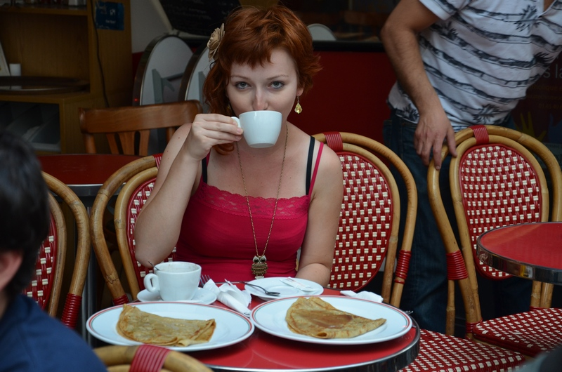
Ve stylové kavárničce
Champs Elyseé mi taky přišla jako takovej větší Václavák. Ani ne o moc luxusnější popravdě.
A ty dvojí otvírací hodiny v Louvru ledasco vysvětlují. :D